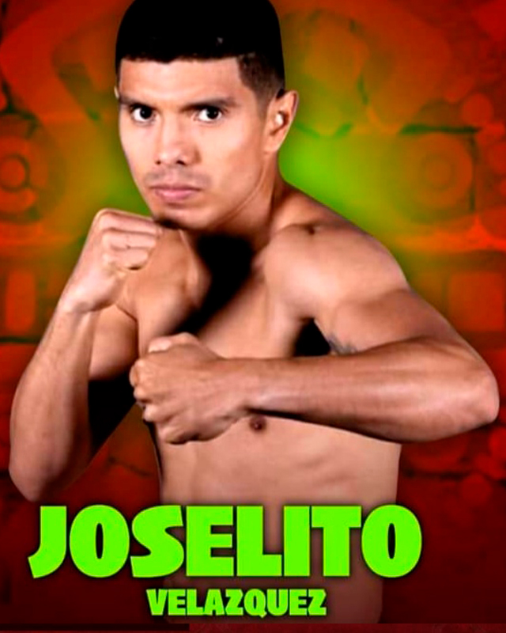

← Nuestros peleadores
Joselito Velázquez · Huracán

Cancún, Quintana Roo · 23-1-1, 15 KO’s
De importante paso en la selección mexicana llegando a la máxima justa, los Juegos Olímpicos de Río 2016, el cancunense Joselito Velázquez ha tenido los reflectores encima desde su debut profesional, logrando una exitosa carrera en los cuadriláteros de México y los Estados Unidos en los majestuosos escenarios donde se presenta Saúl ‘Canelo’ Álvarez con quien comparte la sala de prácticas en San Diego; ha sumado nombres importantes a su lista de víctimas hasta conquistar el título mundial Silver WBC noqueando al chileno Andrés Campos, hoy está ubicado entre los principales contendientes en los rankings verde y oro en la división mosca.